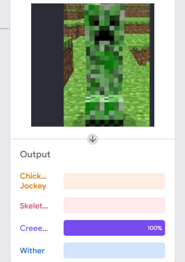
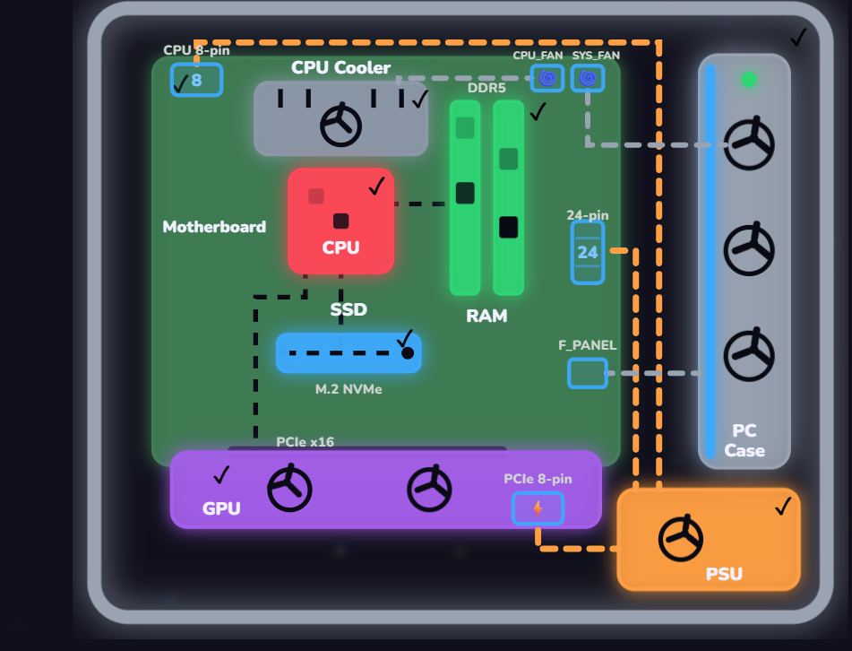
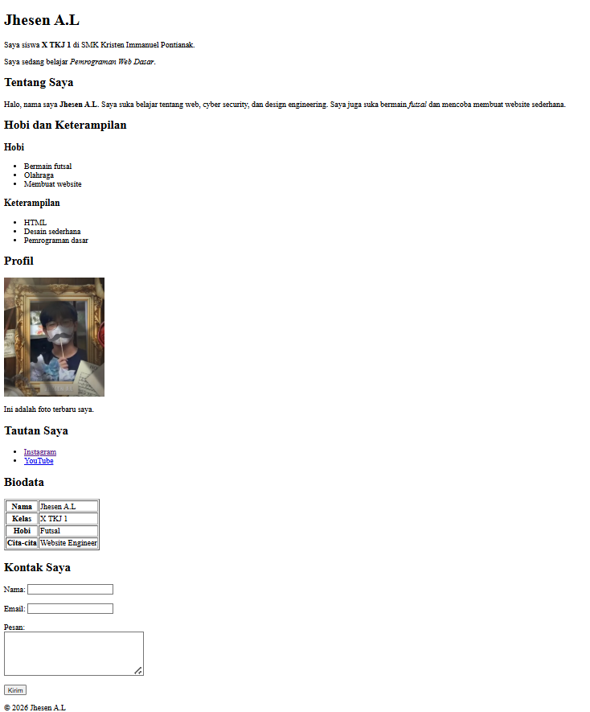
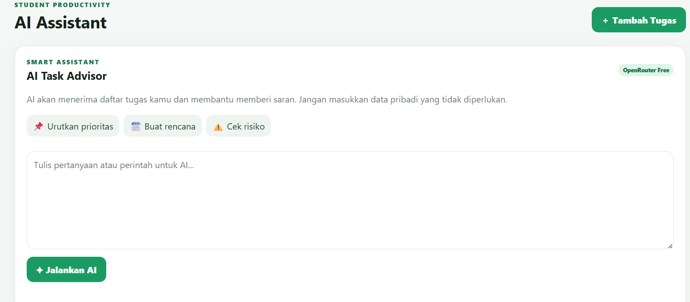
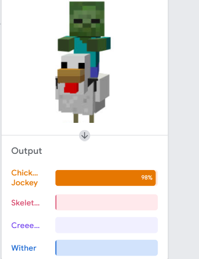
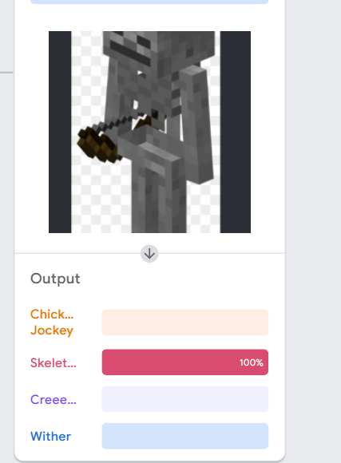

1. AI Mengenali Creeper
Eksperimen mengajarkan AI mengenali gambar Creeper dari Minecraft.
Berikut enam eksperimen dan latihan yang pernah saya kerjakan. Beberapa merupakan latihan belajar, bukan produk komersial.

Eksperimen mengajarkan AI mengenali gambar Creeper dari Minecraft.

Mempelajari komponen komputer seperti motherboard, CPU, RAM, GPU, SSD, dan PSU.

Latihan awal membuat halaman profil dan biodata menggunakan HTML.

Eksperimen menghubungkan website dengan AI melalui OpenRouter dan deployment di Vercel.

Latihan pengenalan gambar untuk membedakan Chicken Jockey.

Latihan pengenalan gambar untuk mengenali karakter Skeleton dari Minecraft.